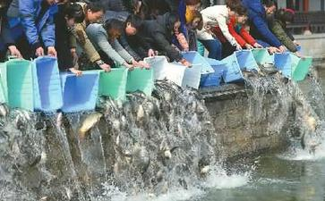

以前，古印度有位信奉外道的国王，名叫"车金"，他喜欢食用新鲜温热的血肉，从而宰杀了数以万计的生命。
后来，堕生在
放生的根据，最为
另一部《金光明经》卷四〈流水长者子品〉，也提到有关释迦
长者子眼见上万大小鱼类濒临死亡边缘，又无法从其上游决堤引水，于是为了救活鱼群，不得已向当时国王请求派二十只大象，用皮囊盛水运到池中，直到池水满足，并且饲以食料，方才救活这些鱼群。
放生是佛教慈悲的体现，是人与动物的和谐相处，体现的是对地球母亲和大自然的热爱之心和绿色
放生本是救护众生、修积功德的善举，是奉献爱心的表现，理应得到提倡和支持。但什么物种可以放生，什么物种不宜放生，许多人缺乏放生的相关知识和生态保护常识。普及放生知识和环境保护常识，是一件很有意义的事情。
科学放生。首先要了解放生对象的物种特性、
要选择“土著品种”放生。国家农业部《水生生物增殖放流管理规定》要求，要科学放生，要选择适合的时间和地点放生本地品种。就是要选择本地原有的品种放生，对内地来的物种要谨慎选择，对国外引进的外来物种坚决不能放生。作为一个老百姓，无法确定适合的放生品种时，应该请教他人或向有关部门咨询，或暂时不放生。
但现今有些人却只为了做功德而放生，对于放生的动物能否适应环境存活下来，对于其他物种是否存在危害，全然不顾，失去了放生的意义。
所以放生前应注意以下几点：1、在自然界，弱肉强食，有时非常残忍，所以，不要把羊放生到狼群里，也不要把狼放生到羊群里。我们不要把会吃鱼的龟放到鱼群里，也不要把会被龟吃的鱼放生到龟群里。否则，您将看到的不会是被放生动物重获自由的欢乐，而是被抢食掉的悲惨。那样，就完全失去放生的意义了。所以放生要有智慧，不然，好心会办成坏事。
2、有些动物从小被人养大，有些是生病或受伤了，所以失去了在野外生存的能力。请不要把已经失去在野外生存能力的动物放生到野外，否则，它们不是在野外饿死、病死，就是成为其他动物的食物，即使侥幸活下来了，也会是无家可归的孤儿。
3、放生前一定要了解动物的生活习性，了解它们能够在怎样的环境里生存。不要把只能在盐水环境里生存的动物，放生到淡水的河里、水库、或放生池。也不要把只能在淡水里生存的动物放生到海里。否则虽然您想的是要放生，却造成了伤生的事实。
4、放生的地点应该选在远离可能被再次捕捉到的地方。
5、要注意生态环境的保护，不要因为您的放生使原来的生态环境遭到破坏，结果放了一批，却害死了另一批。
6、要照顾放
7、放生是一件功德无边的事情。当你去买鱼、鸟等动物时，看到数目不多时，不要心里想我今天要放多少条命，所以要到另一个地方去买才有足够的数量，或去另一个地方买会更便宜。
遇到了就是缘分！而且生命是平等的，在您眼前的众生已经面临被杀死的
因为订货造成的直接恶果就是鼓励商贩们去捕捉动物，而在被捕捉的过程中有很多很多动物会被伤害甚至死亡，可以想象如果因为您的放生却反而造成动物的伤害和死亡，那您还怎么能成就放生的功德呢？这是大错特错的一种做法！奉劝人们在想要放生时，自己直接、临时去市场买。您见到的那就是与您有缘的众生，就是可以成就您放生功德的众生。
8、所放生的动物是否是本土物种。例如：巴西龟生育期短，繁殖能力强，能适应各种环境生存，价格比较便宜，近年来很多人都爱放生这种龟。
有谁知道巴西龟是食肉的，又没有天敌，粪便对水的污染严重，据有关专家考证后，如果我国允许大量繁殖巴西龟，若干年后它将造成中国好几种物种的灭绝和异化。专家们也许有点耸人听闻，但事实上国家确实在禁止进口这种动物，各大河流湖泊等水域也不许随便放生。
9、不要太注重于仪式。能够完整地做个放生仪式当然好，但是简单地念三遍皈依也是一样可以的。重要的是，不要因为长长的念诵仪式，让众生等不到被放了就先死了。
我们首先对放生应有一个正确的理解，才能够如理
我们的心是有求的心还是无私的心，这样差距就太大了。我通过几年来带领大家放生，看到很多放生的人们都有一颗有求的心，不是因为身体不好，成天生病，就是前世杀业太重，生活中多有磨难，大家都想通过放生来有所改变。有如此起心动念，放生是得不到多少利益的，因为你在和一个个动物做交易。
放生心应该是无私心，要知道救度每一个众生，是我们应尽的义务，而不是用几个动物几条鱼来换取你所求的事。我们通过放生要从心上发慈悲心，带动整个社会上所有的人们放生不杀生，吃素不吃肉，人人爱护有情众生，这样的心态放生就能够得到更大的利益和功德，自然就把病给治好了，杀业也就消了，而且身体
以前交通不便利，放生的鸟、鱼等，都产自本地或附近，放生并没有水土不服或物种差异的问题。但现在很多放生有问题，常在
有专家说，像巴西红耳龟这样的外来物种，它生存力强、适应性广、繁殖速度快，在我国每年造成的直接经济损失达1198亿元，对生态系统、本土物种及遗传资源造成的损失更大。巴西红耳龟能使同类物种的生存受到毁灭性打击，有调查发现，巴西红耳龟出现的地域，大量破坏当地物种生物链，几乎无一例外地使其它本土龟类灭绝，鱼类、虾类和水草大量减产。它还是
例如鱼塘养大的鱼不能放在河里、海里，它们可能已经不会自行觅食了；或者把海鱼放回河里，没有考虑到鱼类与水质、水深、水温的习性，盲目放生，没有功德，反倒有罪过。
2012年6月1日，十余名北京客来到在京冀交界处不远的河北省兴隆县苗耳洞村，将数千条蛇放归野外。长蛇横行一度在当地引起恐慌，村民们便撇下农活，开始了打蛇行动。
放生变杀生而放生客也向村民支付4万余元，用以弥补村民打蛇所带来的误工损失。放生不仅从佛教角度、或是动物保护角度、亦或是人性角度本来都是功德好事一件，缘何近年放生活动屡遭非议，放生变杀生频频出现？不了解放生知识，放生就有可能变成杀生，规范放生已摆在我们面前。
显然，北京的这十余名放生客放生数千条蛇并没有遵循有关规定。这样的放生行为在很多地方屡见不鲜。这种违法行为很容易造成“害生”，体现在几方面：一是对放生动物的伤害，二是对当地居住者可能造成人身伤害，三是对当地生态可能造成危害。
由于不知道被放生的蛇是否有毒，而且担心被放生的蛇伤害，当地苗耳洞村能出动的男人已全部上阵打蛇，且已打死了几百条蛇。这样一来，原本想放生却害死了这些蛇，与放生者的愿望背道而驰。
更重要的是，大量放生的动物如属于引进外来物种，稍有不慎，就会造成当地生态和环境的灾难。
蛇既是生物链较高端的动物，也是对人和其他动物有毒有害的动物。它们如果以放生的形式大量地移居到另一个地方，就会成为强势物种。因为，制约它们的天敌，不会成比例增加，它们的出现除了破坏当地生物多样性的平衡外，还可能对农业生产造成灾害。
日前，第二届广东休渔放生节上，“爱心人士”将许多小鱼小虾“小海龟”放生大海。一只不愿下水的“小海龟”被工作人员奋力掷进了南海。这一幕被记者拍下，随后引起了网民的愤怒：照片上那只对人类“恋恋不舍”的小龟，其实是国家二级保护动物缅甸陆龟(Indotestudo elongata)。
这个小家伙别说不能下海，即便是在淡水里也无法生存。普通民众分不清海龟、陆龟、水龟不稀奇，但放生要用科学来放好不好？保护动物，也要讲科学和规矩，不能仅凭冲动和热情。
家住西山八大处脚下的胡先生致电本报说，山上突然出现一大群毛色鲜艳漂亮的小鸟，引来一帮孩子捕捉玩耍，很多小鸟因而死亡。
3月9日下午，记者来到临近八大处的雍王府山区，能看见有大批红嘴、身披蓝绿色羽毛的小鸟停留在山林中，有的在矮丛和草地上蹦，有的在树杈上飞不了几米又落下来，大多不避人。
20多个孩子三五成群地用罩网捕，用车筐扣，甚至用手抓。如果飞到树上够不到，一些男孩就一大把石头扔过去，总有斩获。不一会儿死的活的十多只小鸟成为孩子们的战利品，其中几只被孩子攥在手里几分钟不到竟莫名其妙地死掉了。
并不是所有的孩子以捕杀为乐，有些孩子确实想把小鸟们当宠物拿回家养。9岁女孩桂桂(化名)前天下午一个人就逮到30多只。她把小鸟们全拿回家养，喂它们在外面捡的谷子粒吃。
没想到一夜过去，30多只鸟全都死了。今天她只好再过来捕。“捡回来的谷子粒它们不吃，真奇怪，为什么全死了呢？是饿死的么？”
据了解，这群小鸟是前一天由3个人开车带来在此放生的。他们提了几十个笼子，一共放生2000多只小鸟，走之前还在周围撒上谷子粒。
鸟类专家赵欣如说，孩子们捕杀小鸟的行为固然需要加强教育，告诉他们尽量不要干涉动物们的生活。但是这种放生的做法不值得提倡。他说，这群小鸟学名叫红嘴相思鸟，长年生活在南方地区，在北方气候条件下它们很难生存。他觉得，放生者们用心良苦，但却因为缺少鸟类知识而事与愿违，有时甚至会给当地生态环境造成一定破坏。
电视剧《
唐先生经常到海湾大桥一带游泳，附近经常开展的放生活动引起唐先生的注意。经过一段时间观察后，他发现，放进水里的动物很快不适应环境相继“翻白肚”，不久就全部死亡。唐先生说，那些市民将鲶鱼、鳝鱼、甲鱼等淡水鱼投进咸水中，鱼类因水土不服大都浮起来，“看着鱼在不适应的水域中痛苦挣扎，这根本就不是放生，简直是杀生。”放生本是做好事，但不讲究自然规律乱放生，只能适得其反，间接提前结束动物们的生命。
像唐先生描述的情况，在汕头不时可见。在礐石风景区一带经常有人从外地购买禾花雀等鸟类在此放生，这些小鸟放生后扑腾扑腾根本飞不远，也很难在当地觅食存活下来，最终能成功被放生的寥寥无几，可怜的鸟儿们“才出牢笼，很快又遭横死”，令人叹惜。
不讲科学方法放生，除了引发放生物集体死亡，有的市民随意放生外来物种，还可能带来破坏原有生态平衡的恶果。
濠江区一家茶园经营者蔡先生前段时间深受龟患困扰。原来，有市民游玩时将宠物小龟放到茶园池塘里放生。蔡先生渐渐发现池里的鱼儿少了很多，相反，乌龟们却“茁壮成长”。直到无意间看到几只乌龟撕食锦鲤的场景，蔡先生才明白这些可爱的小龟竟是巴西龟，池塘的鱼儿就是被它们吃光了。
而让中山公园管理者烦恼的则是罗非鱼。负责人贝先生说，玉鉴湖除观赏功能外，管理处每年都放有草鱼、鲤鱼等，但经常有市民偷偷将罗非鱼投入放生，其中以罗非鱼繁衍能力最强，很快就“鸠占鹊巢”，成了水中的“主角”。罗非鱼抢去大量食物，放养鱼类因食物不足而成长受滞。管理人员只能放网捕捉，尽量减少它对整个环境的影响。
放生市民增多，有需求便有市场，越来越多的商贩打起了贩卖放生动物的生意。
市区金新路金砂公园路段有一条本地市民熟悉的“金鱼街”。近日下午，记者来到“金鱼街”，以顾客身份向一商贩询问什么物种适合放生，商贩随即推荐，生命力较强的金鱼和巴西龟都适合放生，其中巴西龟销路最好，经常有人大量购买用于放生。
随后，记者也提出要购买100只巴西龟来放生的要求，听到如此多的数量，这名商贩似乎见怪不怪，当即表示2天后便可前来提货。对于记者担心如此短时间能否确保有100只巴西龟出售，这名商贩一直说大可放心。
无独有偶，在鮀城老市区，一名水产经营者向记者透露，不时会接到善堂购买大量鱼类、甲鱼的订单，他大概知道购买用途是放生，但对方不问，他也不会告诉这些动物适合生存在什么水域。一次有个善堂竟要买山龟送进海里放生，“摆在这些动物面前是死路一条”，这位经营者“心里明镜似的”，但“人家要买，我就卖给他们，其它我可管不了”。
市民放生动物一般向商贩下订单购买，这一定程度上促使店家根据顾客需求进更多的货物，甚至想办法捕获动物满足订单。有的是放生者前脚刚走，鱼、龟等动物后脚就被人抓走，重新贩卖或上了饭桌。
专家提醒： 几大种类不宜放生
俗话说：“好心做坏事。”不少市民本着善意，将动物放归大自然，却没想到，由于放生的方法不科学，最终导致动物死亡或环境破坏。那么市民该如何放生，才能成为真正的善举？
专业人士张先生说，放生要讲究科学，比如外来入侵物种、人工驯化物种和生病受伤等身体状况不佳的动物等等都不适合放生。
人工驯化物种大多已不再适应自然环境，白化皮毛动物由于体色醒目很容易成为猎食者的目标，身体状态不佳的动物也容易因行动迟缓成为猎食者的盘中餐，这样一来便使得放生变成杀生。
外来物种如巴西龟、鳄龟、福寿螺等，一旦放生至野外环境，大量繁殖又没有了天敌限制，抢占本土物种的生存资源，并将其逼向绝路，最终严重破坏生态平衡。
张先生说，市民放生前还应该先检查放生的动物是否有伤或生病，若身体状况不佳应当复健后再行放生。如果是候鸟或其他迁徙性动物，则应依据其迁徙线路选择适合的放生地点或放生时机。 没错，放生是好事，感应不可思议。放生要
放生需要随缘。